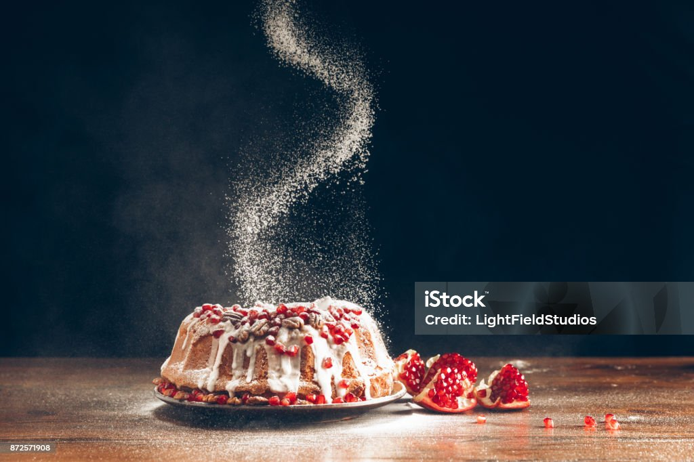
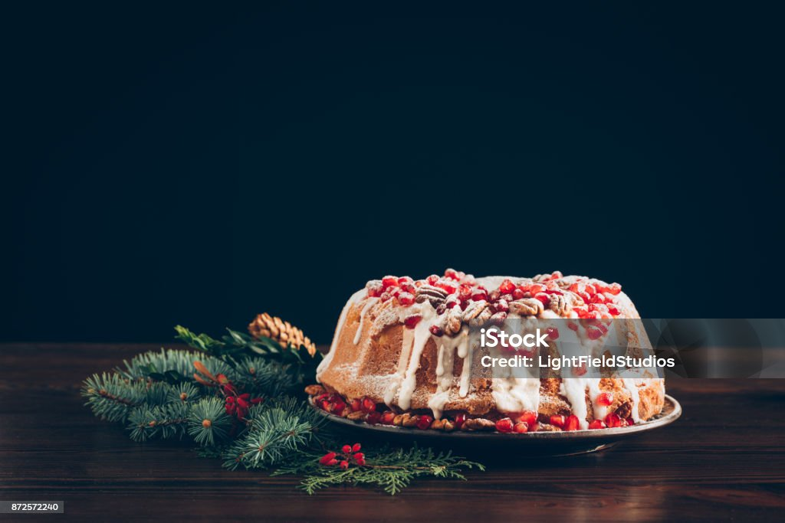
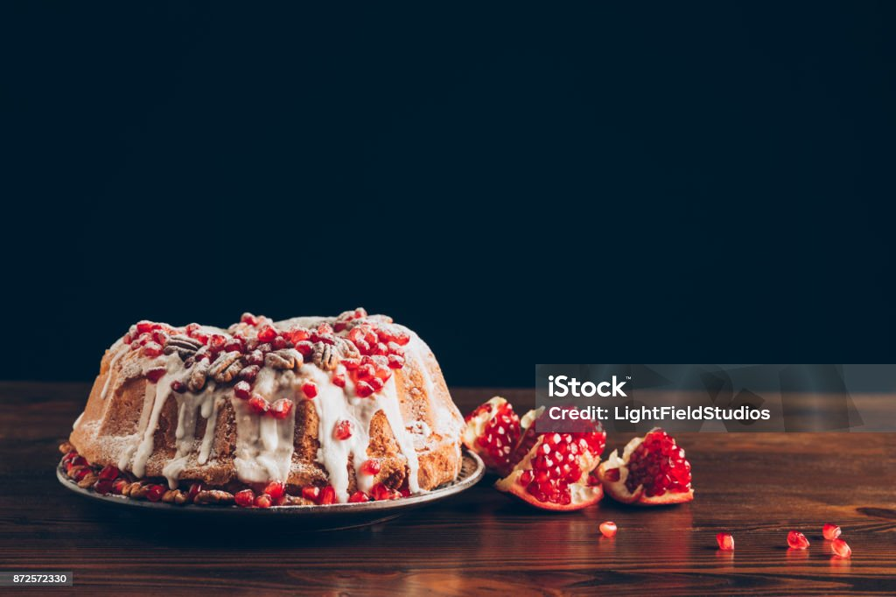
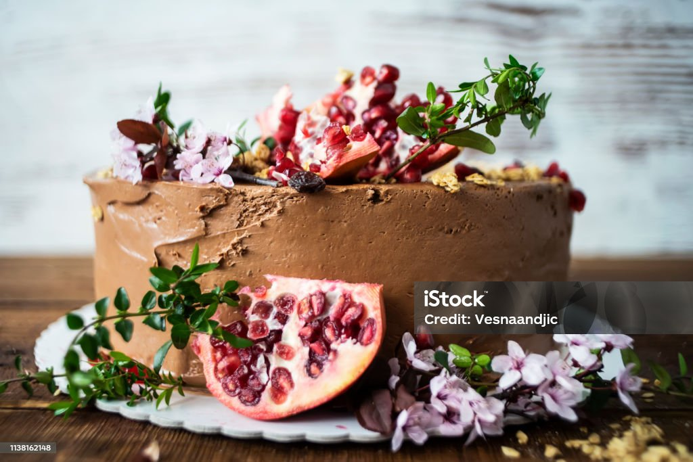
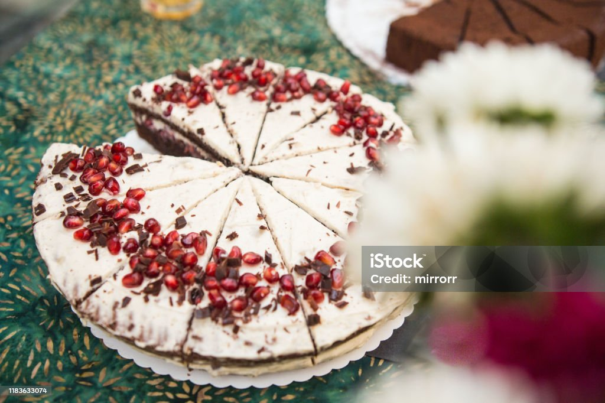
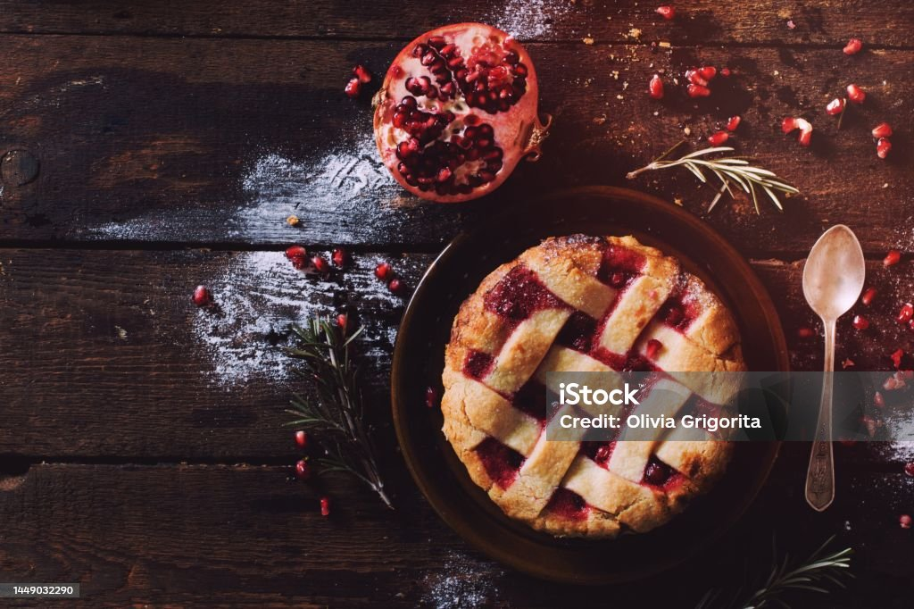
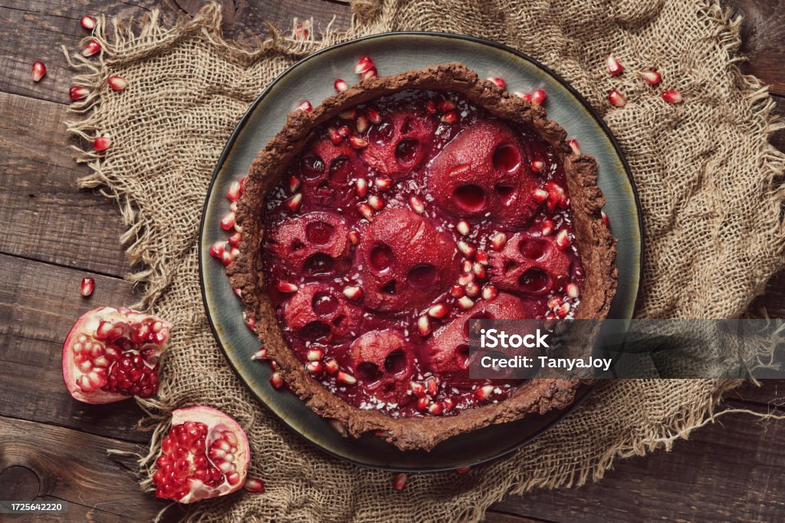
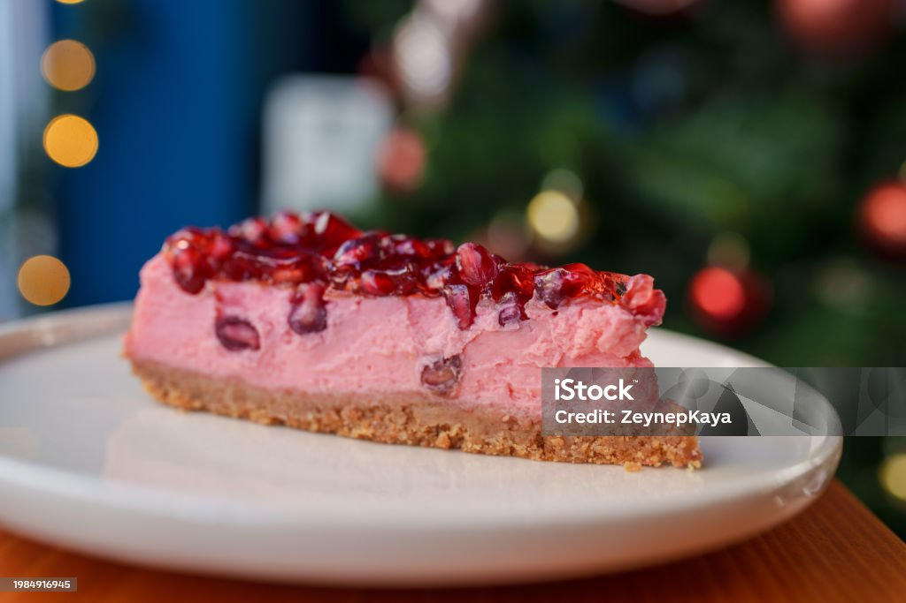

1: 3 φλιτζάνια (430 γρ.) αλεύρι για όλες τις χρήσεις
1:3 cups (430 g) all-purpose flour
2: 2¼ κουταλάκια του γλυκού στιγμιαία μαγιά
2: 2¼ teaspoons instant yeast
3: 12 κουταλιές της σούπας (170 γρ.) αλατισμένο βούτυρο
3: 12 tablespoons (170 g) salted butter
4: 1 ½ φλιτζάνια (355 ml) πλήρες γάλα
4: 1½ cups (355 ml) whole milk
5: ¼ φλιτζάνι (80 γρ.) μέλι
5: ¼ cup (80 g) honey
6: Μια πρέζα αλάτι
6: Pinch of table salt
7: Σιρόπι Ροδιού
7: Pomegranate Syrup
8: ½ φλιτζάνι (120 ml) χυμό ροδιού
8: ½ cup (120 ml) pomegranate juice
9:3 κουταλιές της σούπας (60 γρ.) μέλι
9: 3 tablespoons (60 g) honey
Γέμισμα
Filling
1¾ φλιτζάνια (415 ml) κρέμα γάλακτος
1¾ cups (415 ml) heavy whipping cream
2 κουταλιές της σούπας (40 γρ.) μέλι
2 tablespoons (40 g) honey
1 ½ φλιτζάνια (210 γρ.) σπόρους ροδιού
1½ cups (210 g) pomegranate seeds
(Βιβλίο Τραπέζι των θεών, Κέικ ροδιού). Μετά την επιτυχημένη εκστρατεία του εναντίον των Ουράρτου το 714 π.Χ., ο βασιλιάς Σαργών Β' επέστρεψε στην πατρίδα του και τίμησε την περίσταση με ένα μεγάλο βασιλικό συμπόσιο. Τα μεγάλα γλέντια ήταν σημαντικό μέρος της ασσυριακής βασιλικής κουλτούρας και οι βασιλιάδες συχνά τα χρησιμοποιούσαν για να επιδείξουν δύναμη, πλούτο και ενότητα μεταξύ αξιωματούχων και επισκεπτών. Ο Σαργών περιέγραψε τη φιλοξενία ηγεμόνων, κυβερνητών, ευγενών, αυλικών και Ασσυρίων πρεσβυτέρων μαζί στο παλάτι του για μια περίτεχνη γιορτή. Αρχεία από το παλάτι στο Καλχού, το οποίο χρησίμευε ως πρωτεύουσα της Ασσυρίας πριν από την ίδρυση του Ντουρ-Σαρούκιν, αναφέρουν κέικ αρωματισμένα ή παρασκευασμένα με ρόδια. Ο καρπός είχε ιδιαίτερη σημασία στην ασσυριακή κουλτούρα. Τα ρόδια εμφανίζονταν συχνά σε έργα τέχνης και διακοσμητικά σχέδια και χρησιμοποιούνταν ακόμη και σε ποτά όπως η μπύρα. Λόγω της συμβολικής και πολιτιστικής τους αξίας, τα κέικ ροδιού μπορεί να συνδέονταν με εορταστικές εκδηλώσεις και βασιλικούς εορτασμούς. Όπως πολλοί άνθρωποι σήμερα, οι αρχαίοι Ασσύριοι χρησιμοποιούσαν γλυκά ψημένα φαγητά για να σηματοδοτήσουν σημαντικά γεγονότα και νίκες.
(Table of gods book, pomegranate Cake). After his successful campaign against Urartu in 714 BCE, King Sargon II returned home and marked the occasion with a grand royal banquet. Large feasts were an important part of Assyrian royal culture, and kings often used them to display power, wealth, and unity among officials and guests. Sargon described hosting rulers, governors, nobles, court officials, and Assyrian elders together in his palace for an elaborate celebration. Records from the palace at Kalhu, which served as Assyria’s capital before the founding of Dur-Sharrukin, mention cakes flavored or prepared with pomegranates. The fruit held special importance in Assyrian culture. Pomegranates appeared frequently in artwork and decorative designs, and they were even used in brewing drinks such as beer. Because of their symbolic and cultural value, pomegranate cakes may have been associated with festive occasions and royal celebrations. Like many people today, the ancient Assyrians used sweet baked foods to mark important events and victories.
Προετοιμασία
Preparation
1 βήμα: Σε ένα μεσαίο μπολ, ανακατέψτε το αλεύρι και τη μαγιά.
Step 1: In a medium bowl, mix the flour and yeast.
2 βήμα: Λιώστε το βούτυρο σε μια μικρή κατσαρόλα σε χαμηλή φωτιά. Προσθέστε το γάλα και το μέλι στην κατσαρόλα και ζεστάνετε το μείγμα μέχρι να γίνει ζεστό στην αφή, περίπου στους 99°F (37°C). Ρίξτε το μείγμα βουτύρου σε ένα μεγάλο μπολ.
Step 2: Melt the butter in a small pot over low heat. Add the milk and honey to the pot and heat the mixture until it is warm to the touch, about 99°F (37°C). Pour the butter mixture into a large bowl.
3 βήμα: Προσθέστε τα τρία τέταρτα του μείγματος αλευριού και ανακατέψτε με ένα μίξερ χειρός.
Step 3: Add three-quarters of the flour mixture and combine with a hand mixer.
4 βήμα: Προσθέστε το αλάτι και το υπόλοιπο αλεύρι και συνεχίστε το ανακάτεμα μέχρι να μην υπάρχουν ίχνη από το αλεύρι.
Step 4: Add the salt and the rest of the flour and continue mixing until there are no traces left of the flour.
5 βήμα: Σκεπάστε τη ζύμη με μια πετσέτα κουζίνας και αφήστε την να φουσκώσει σε ζεστό μέρος για 1 ώρα ή μέχρι να διπλασιαστεί σε όγκο.
Step 5: Cover the dough with a kitchen towel and let it rise in a warm place for 1 hour, or until it has doubled in size.
6 βήμα: Προθερμάνετε τον φούρνο στους 350°F (175°C).
Step 6: Preheat the oven to 350°F (175°C).
7 βήμα: Στρώστε ένα ταψί με αποσπώμενη φόρμα διαμέτρου 22 εκ., με βάθος 7,5 εκ. και αφαιρούμενο πάτο, με λαδόκολλα.
Step 7: Line a 9-inch (22 cm) springform pan with a depth of 3 inches (7½ cm) and a removable bottom with parchment paper.
8 βήμα: Μεταφέρετε τη ζύμη στο ταψί, σκεπάστε την με μια πετσέτα κουζίνας και αφήστε την να φουσκώσει για άλλα 20 λεπτά.
Step 8: Transfer the batter to the pan, cover it with a kitchen towel, and let it rise for another 20 minutes.
9 βήμα: Ψήστε στη μεσαία θέση του φούρνου για 30-35 λεπτά ή μέχρι να ροδίσουν και μια οδοντογλυφίδα να βγαίνει καθαρή.
Step 9: Bake in the middle of the oven for 30–35 minutes, or until golden brown and a toothpick comes out clean.
10 βήμα: Αφήστε το κέικ να κρυώσει εντελώς πριν το αφαιρέσετε προσεκτικά από το ταψί και το ισιώσετε σε τρία στρώματα. Για να ισιώσετε το κέικ, τοποθετήστε το σε μια σταθερή επιφάνεια και χωρίστε οπτικά το κέικ οριζόντια σε τρία μέρη ή, για μεγαλύτερη ακρίβεια, σημειώστε τις γραμμές κοπής με οδοντογλυφίδες γύρω από την περιφέρεια του κέικ πριν το κόψετε. Κόψτε απαλά οριζόντια για να το κόψετε σε τρία ίσα στρώματα, κινώντας το προσεκτικά για να διατηρήσετε ομοιόμορφο πάχος.
Step 10: Allow the cake to cool completely before carefully removing it from the pan and leveling it into three layers. To level the cake, place it on a stable surface and visually divide the cake horizontally into thirds, or for added precision, mark your cutting lines with toothpicks around the cake’s circumference before slicing. Gently slice horizontally to cut it into three even layers, moving carefully to maintain uniform thickness.
11 βήμα: Για το σιρόπι, ανακατέψτε το χυμό ροδιού και το μέλι σε μια μικρή κατσαρόλα και βράστε το μείγμα σε δυνατή φωτιά. Χαμηλώστε τη φωτιά σε μέτρια προς χαμηλή και αφήστε το χυμό να σιγοβράσει για περίπου 10 λεπτά ή μέχρι να πήξει ελαφρώς. Αφήστε το σιρόπι να κρυώσει εντελώς.
Step 11: For the syrup, combine the pomegranate juice and honey in a small pot and bring the mixture to a boil over high heat. Reduce the heat to medium-low and allow the juice to simmer for about 10 minutes, or until it thickens slightly. Allow the syrup to cool completely.
12 βήμα: Χτυπήστε την κρέμα γάλακτος σε σφιχτή μαρέγκα με ένα μίξερ χειρός και στη συνέχεια προσθέστε απαλά το μέλι χρησιμοποιώντας μια σπάτουλα από καουτσούκ.
Step 12: Whip the cream to stiff peaks with a hand mixer, then gently fold in the honey using a rubber spatula.
13 βήμα: Τοποθετήστε την πρώτη στρώση κέικ σε μια επιφάνεια κέικ και απλώστε από πάνω το ένα τρίτο της γέμισης σαντιγί σε ομοιόμορφη στρώση.
Step 13: Place the first layer of cake on a cake board and spread one-third of the whipped cream filling over it in an even layer.
14 βήμα: Επαναλάβετε με τη δεύτερη και την τρίτη στρώση κέικ.
Step 14: Repeat with the second and third layers of cake.
15 βήμα: Ολοκληρώστε πασπαλίζοντας γενναιόδωρα την πάνω στρώση του κέικ με σπόρους ροδιού.
Step 15: Finish by topping the top layer of cake generously with pomegranate seeds.
15 βήμα: Περιχύστε το κέικ με το κρύο σιρόπι ροδιού πριν το σερβίρετε.
Step 15: Drizzle the cooled pomegranate syrup over the cake before serving it.
Eπαφή
Contact

Το Instagram μου
My Instagram
Στοιχεία Επικοινωνίας
Contact Information